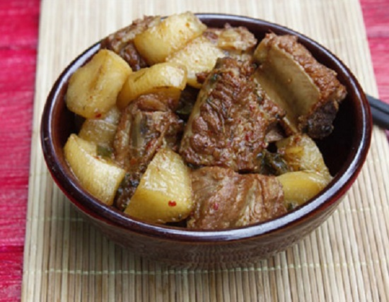

Tin Tức
Sườn non kho củ cải trắng
Cách làm sườn non kho củ cải trắng là món ăn chính trong thực đơn bữa ăn hàng ngày được chế biến từ nguyên liệu chính là : sườn non, củ cải trắng và các hương liệu và gia vị khác, mang đến món ngon đậm đà , vị ngọt của củ cải sẽ làm bạn khó quên món ăn này nhé. Ngay bây giờ, với các nguyên liệu chuẩn vị sẵn sàng, 6monngonmoingay.com sẽ thực hành chế biến món sườn non kho củ cải trắng tuyệt vời này nhé.